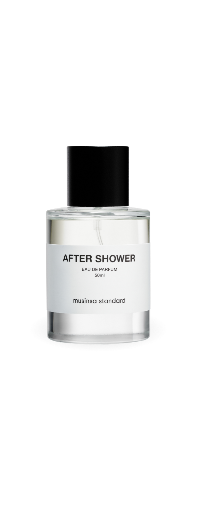

UNSEEN
PRESENCE
말하지 않아도 전해지는, 당신과 나 사이의 공백.
조용히 곁에 머물며 당신만의 아우라가 되는 향.
Signature Scent
VOID 16:00
서늘한 공기 사이로 비스듬히 떨어지는 오후의 볕.
그 고요하고 나른한 찰나의 온도를 부드러운 잔향으로 엮어냈습니다.
Prologue to Serenity
평온으로의 서막

HAZE 07:00
BARE 13:00
ECHO 23:00
GIFT COLLECTION
보이지 않는 아우라를 선물하다
말하지 않아도 전해지는 깊은 온기,
당신과 나 사이의 공백을 채우는 가장 우아한 방법.
AIDORA의 정제된 감각을 소중한 분의 공간에 초대하세요.